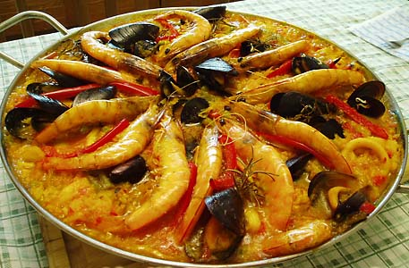

|
Istorie Politică Comunități autonome Mediul înconjurător Economie Demografie Bucătăria spaniolă Seat |
Bucătăria SpaniolăBucataria spaniola este alcatuita dintr-o mare varietate de feluri de mancare, varietate datorata diferentelor de geografie, cultura si clima dintre regiunile acestei tari. Istoria bogata a Spaniei, si influentele culturale au dus la  nasterea unei bucatari unice cu litreralmente mii de retete si arome. Radacinile ei sunt mediteraneene iar pestele si fructele de mare sunt ingrediente de baza. Bucataria spaniola este alcatuita dintr-o mare varietate de feluri de mancare, varietate datorata diferentelor de geografie, cultura si clima dintre regiunile acestei tari. Istoria bogata a Spaniei, si influentele culturale au dus la nasterea unei bucatari unice cu litreralmente mii de retete si arome. Radacinile ei sunt mediteraneene iar pestele si fructele de mare sunt ingrediente de baza. Peninsula contine doua tipuri culinare majore. Satele din nord si nord-vest au o dieta cu multa grasime animala. Celalalt tip este precursor al dietei mediteraneene si se intalneste in partea iberica a peninsulei. O parte semnificativa a bucatariei spaniole deriva din cea evreiasca si cea maura. Maurii au fost o influenta puternica in Spania pentru multe secole si multe din mancarurile lor se consuma inca. Insa carnea de porc este foarte populara si pentru multe sute de ani, a manca carne de porc echivala cu o declaratie de nationalitate limpieza de
Bucataria spaniola foloseste de asemenea ingrediente aduse din America, cum ar fi cartofii, rosiile, piperul sau fasolea. Din Spania, aceste alimente au fost mai apoi raspandite in Europa. Acestea sunt cateva din influentele principale care deosebesc bucataria spaniola de bucataria mediteraneeana, cu care are in comun multe tehnici si ingrediente. Ingredientul esential este uleiul de masline, iar 50% din productia mondiala de masline vine din Spania.Mesele zilnice inca se mai prepara traditional din ingrediente proaspete cumparate zilnic din piata locala. Acesta practica este mai comuna in ariile rurale decat in orase, unde supermarketurile au inceput sa inlocuiasca pietele in aer liber. Gatitul traditional spaniol graviteaza deseori in jurul gratarului in aer liber, intr-un cuptor de caramizi sau lut. |
 sangre (puritatea sangelui), deoarece acest aliment nu era consumat de evrei sau musulmani.
sangre (puritatea sangelui), deoarece acest aliment nu era consumat de evrei sau musulmani.